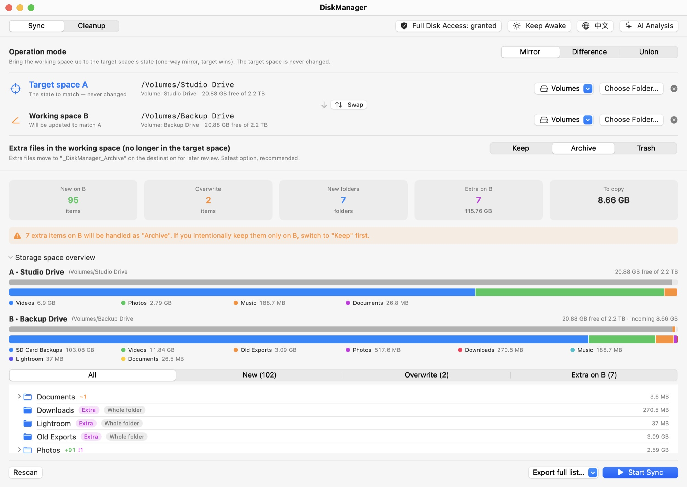
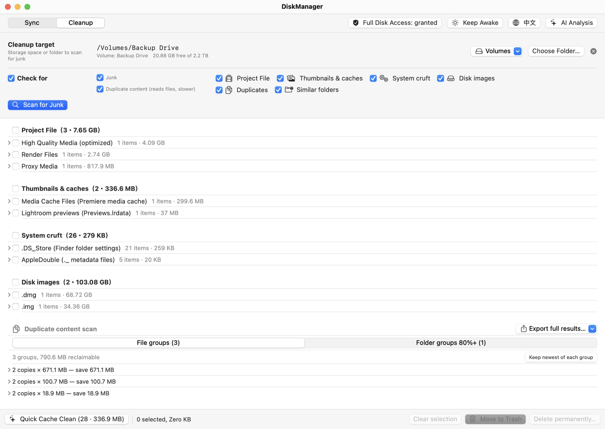
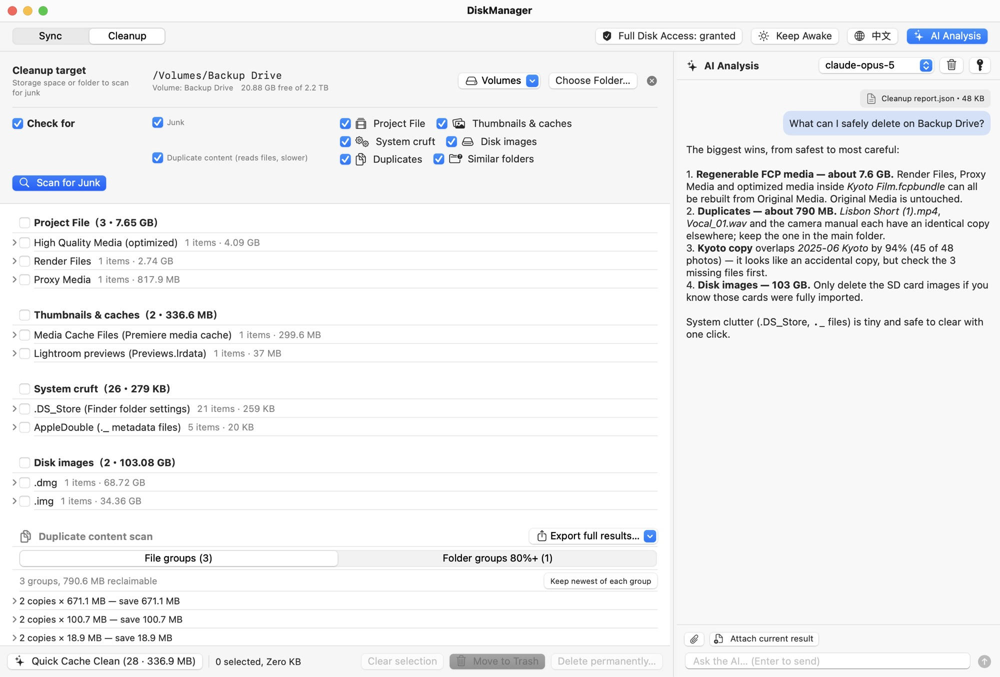

Sync and clean up two drives without losing a single file
DiskManager compares two drives or folders, shows you exactly what will change, and only then mirrors, prunes or merges them. Anything it replaces is archived, never silently deleted.

One app for keeping two storage spaces in shape
Built for anyone juggling external drives: a travel SSD and a home archive, two backups kept in different places, or just two folders that drifted apart.
Sync with a plan you can read
Scanning is read-only. You get the full plan first: what will be added, overwritten or archived, folder by folder.
- Three modes: Mirror, Difference, Union
- Browsable diff tree with sizes and counts
- Storage bars that block a sync that won't fit
Clean up what you don't need
Finds space you can safely reclaim, grouped into categories and subcategories. Nothing is removed until you tick it.
- Regenerable Final Cut Pro / iMovie render and proxy media (never Original Media)
- Disk images, .DS_Store, ._ files, Lightroom and Premiere caches
- Duplicate files and near-identical folders
Ask AI about the results
Open the chat panel and attach the current plan or report. Ask which folders take the most space or which duplicate to keep.
- Claude or GPT with your own API key
- Keys live only in the macOS Keychain
- Advice only: the AI can't touch your files
Mirror
Bring B up to date with A. Files missing from B are copied, outdated ones overwritten, and files that exist only on B are archived.
Difference
Lists only what B has and A doesn't, then archives or trashes it after you confirm. Nothing is copied or overwritten.
Union
Fill in both sides. When a file differs, the newer one wins and the older is archived. Anything ambiguous is left alone and listed.
See it in action
The screenshots follow this page's language and theme, just like the app.
{kind=link}
{kind=link}

{kind=link}

Screenshots use demo drives. Click to view full size.
Install and open DiskManager
Takes about a minute. The Gatekeeper step is needed only on first launch.
Download and move to Applications
Download the latest DiskManager-x.y.z.zip, double-click it to unzip, then drag DiskManager.app into your Applications folder.
Open it past Gatekeeper
DiskManager is code-signed but not notarized by Apple, since notarization requires a paid Apple Developer membership. On first launch, macOS shows a warning like:
Apple could not verify “DiskManager” is free of malware that may harm your Mac or compromise your privacy.
This doesn't mean the app is harmful. It only means Apple hasn't reviewed it. The full source is on GitHub. Pick one of these:
After the first launch, DiskManager opens normally with a double-click.
Grant Full Disk Access
macOS doesn't let apps request this permission themselves. Open System Settings › Privacy & Security › Full Disk Access, turn on DiskManager (use + to add it if it isn't listed), then relaunch the app.
Without it, macOS asks separately for Desktop, Documents, Downloads and every external or network volume, and protected folders are skipped. The shield in the toolbar shows the current status.
Optional: verify the download
Each release lists the zip's SHA-256 checksum. Compare it with:
shasum -a 256 ~/Downloads/DiskManager-*.zip
Prefer building it yourself? Clone the repository and run make app (requires Xcode command-line tools).